Настройка интеграции Asterisk + FreePBX c CRM Битрикс24 при помощи сервиса Callbee
Важное замечание
Для подключения интеграции необходимо поочередно выполнить пункты данного руководства в той последовательности, как они описаны.
Важное замечание
Визуальное размещение некоторых элементов в настройках интеграции может изменяться в зависимости от доработок
Необходимые требования:
Asterisk + FreePBX далее АТС
- Asterisk версия 13.*.* или выше
- FreePBX версия 13.*.* или выше
- Статический IP адрес (необходимо приобрести у вашего интернет-провайдера) для прямого доступа к АТС из сети Интернет
Интеграция осуществляется при помощи подключения облачного сервиса Callbee к АТС при помощи Asterisk Managment Interface (AMI) посредством TCP протокола. AMI принимает подключения, устанавливаемые на сетевой порт (по умолчанию - TCP порт 5038)
Сетевые настройки
Info
Интерфейс настройки проброса портов отличается в зависимости от используемого в вашей сети маршрутизатора. Актуальную инструкцию по пробросу портов под ваш маршрутизатор вы можете найти в интернете.
Для того чтобы сервис Callbee мог подключится к вашей АТС, у вас обязательно должен быть "белый" статический IP адрес либо доменное имя с A-записью на ваш IP адрес, и проброшены через NAT к АТС следующие два порта:
- внешний порт (например 50380) на порт 5038 TCP - для доступа к АТС по AMI (Замечание по безопасности! Рекомендуем открывать порт разрешив подключение с IP адресов указанных в списке)
- внешний порт (например 50381) на порт 80 TCP (стандартный порт веб - сервера АТС) - для выгрузки записей разговоров
Настройка записи разговоров
Для того чтобы запись разговоров была доступна для скачивания, необходимо на сервере телефонии выполнить две команды подключившись по SSH:
ln -s /var/spool/asterisk/monitor/ /var/www/html/monitor


touch /var/www/html/.htaccess && echo "Options -Indexes" > /var/www/html/.htaccess

но прямой доступ к записям для интегарции останется
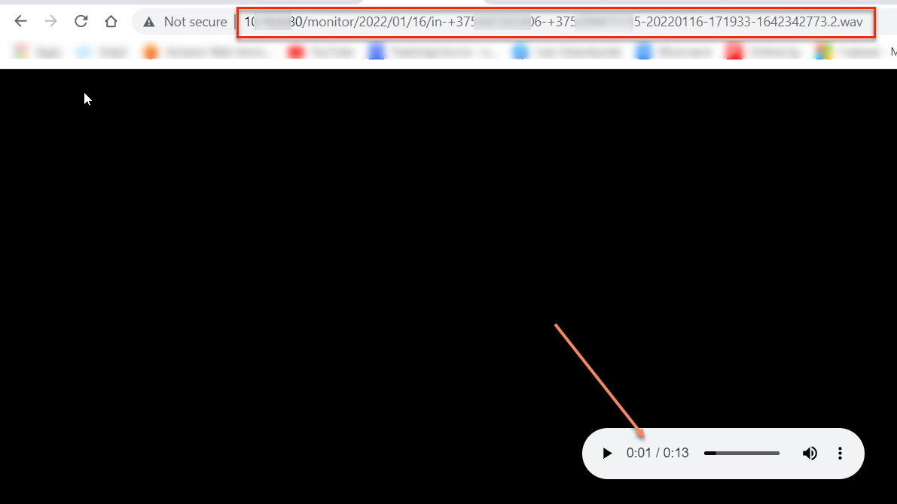
Установка и настройка приложения Callbee в Битрикс24
Info
Для настройки интеграции вам необходимо иметь: Облачный или коробочный Битрикс24 любой редакции.
- Войдите в свой корпоративный портал Битрикс24 пользователем с правами администратора.
- В меню Битрикс24 перейдите на страницу «Приложения»:
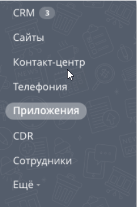
- В строке поиска «Категория» выберете «Интеграция с телефонией» или «IP- телефония»
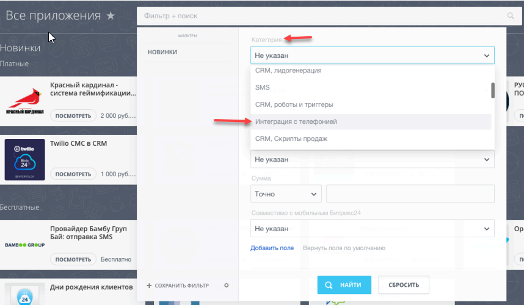

- Перейдите на страницу приложения «Callbee» и нажмите кнопку «Установить»:
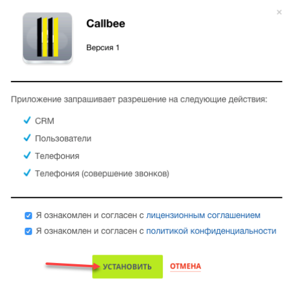
Добавление внутренних телефонов у сотрудников в Битрикс24
- Перейдите на страницу Сотрудники (1)
- Откройте профиль Сотрудника (2)

- Внесите внутренний номер телефона сотрудника (3)

Важное замечание
Дальнейшую настройку Битрикс24 необходимо производить после настройки Asterisk + FreePBX
Настройка Asterisk + FreePBX
Важное замечание
- Внутренние номера (Extensions) могут быть трехзначными или четырехзначными (222 или 2222).
- На всех входящих маршрутах (Inbound Routes) ожидаемый входящий номер DID должен быть не менее 5 цифр, это может быть номер линии в международном формате (например: +375291111111).
- На всех входящих (Inbound Routes) и исходящих маршрутах (Outbound Routes) обязательно должны быть включены записи разговоров.
- Сервис Callbee не изменяет входящий номер телефона. Входящий номер телефона будет проброшен в Битрикс24 том виде в каком он поступил на АТС.(Рекомендуется средствами АТС приводить все входящие номера телефонов к единому международному формату).
- При звонке по клику из Битрикс24 на АТС поступает номер телефона в международном формате.
- Для корректной работы интеграции мы рекомендуем настройки на АТС, которые не указаны в данной инструкции, оставить по умолчанию.
- Если входящий вызов не попадает на АТС или исходящий вызов уходит в линию, то никакие сущности в Битрикс24 создаваться не будут.
- Интеграция не гарантирует корректную работу функций при использовании модуля FreePBX Ring Groups для настройки распределения входящих вызовов в АТС. Для корректной работы всех функций интеграции рекомендуем вместо Ring Groups использовать Queues
Настройка AMI Asterisk
Для подключения к AMI Asterisk нужно создать AMI пользователя на стороне Asterisk. Это можно сделать двумя способами:
-
Способ 1 через CLI:
В файле /etc/asterisk/manager_custom.conf добавить (например):
[callbee] secret=password # Вместо password указываем свой пароль deny=0.0.0.0/0.0.0.0 permit=127.0.0.1/255.255.255.0 permit=89.108.65.246/255.255.255.255 permit=31.24.92.54/255.255.255.255 permit=46.101.225.17/255.255.255.255 read=system,call,log,verbose,command,agent,user,config,command,dtmf,reporting,cdr,dialplan,originate,message write=system,call,log,verbose,command,agent,user,config,command,dtmf,reporting,cdr,dialplan,originate,message writetimeout = 500После чего выполнить команду
asterisk -rx "manager reload" -
Способ 2 через интерфейс FreePBX:
- Должен быть установлен модуль Asterisk API
- Выберете пункт меню «Settings»(1) -> «Asterisk Manager Users»(2)
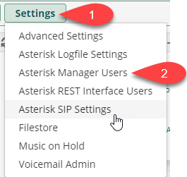
- Нажмите «Add Manager»
- Во вкладке «General» указать имя учетной записи, задать криптостойкий пароль и
добавить доступ в пункт «Permit», указав IP адреса серверов Callbee 89.108.65.246, 31.24.92.54, 46.101.225.17 к AMI-интерфейсу
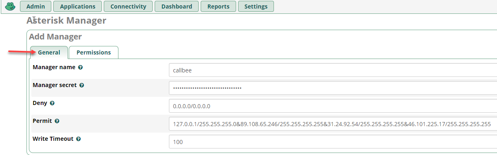
- Во вкладке «Permissions» установить все переключатели в положение «Yes»

Настройка «Входящей маршрутизации (Inbound Routes)» в FreePBX
Пример стандартной настройки:
- Перейдите «Connectivity» -> «Inbound Routes»

- Вкладка «General»
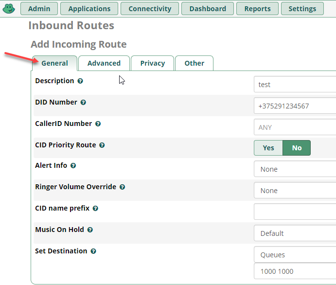
- Вкладка «Advanced», на параметре «Pause Before Answer» устанавливаем значение равным "2"
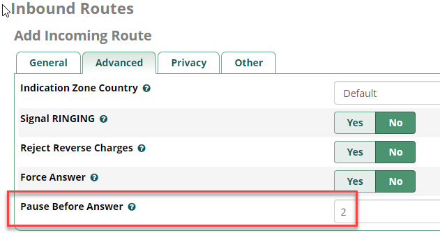
Info
Для работы умной маршрутизации необходимо успеть получить ответ от CRM на запрос наличия существующего контакта с определившимся номером телефона. Для этого необходимо выставлять задержку на маршрутах «Pause Before Answer» (например 2 сек)
- Вкладка «Other», значение параметра «Call Recording» устанавливаем «Yes»
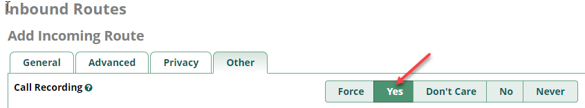
Info
Данная настройка выполняется для получения записей разговоров в CRM
Настройка «Исходящей маршрутизации (Outbound Routes)» в FreePBX
Важное замечание
Поле Route CID должно быть пустым
Пример стандартной настройки:
- Перейдите «Connectivity» -> «Outbound Routes»
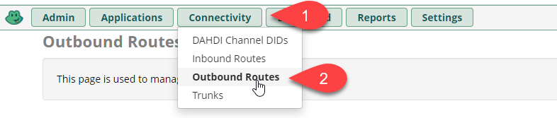
- Вкладка «Route Settings»

- Вкладка «Additional Settings»

Info
Данная настройка выполняется для получения записей разговоров в CRM
Настройка «Внутренних номеров(Extensions)» в FreePBX
Важное замечание
- Внутренние номера («Extensions») должны быть трех- или четырехзначные (208 или 2080)
- «Outbound CID» оставить по умолчанию
- Внутренние номера необходимо настраивать с использованием драйвера CHAN_SIP или PJ_SIP

- Настройку записей разговоров оставить по умолчанию (записи записываются на маршрутах)
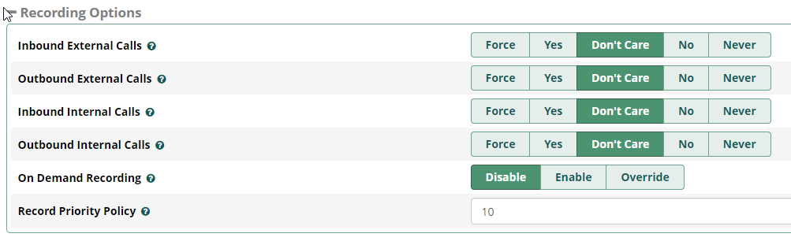
Подключение интеграции на стороне сервиса Callbee
После проведения всех настроек описанных выше необходимо произвести подключение сервиса.
Подключение интеграции на стороне сервиса Callbee вручную
- Нажмите кнопку BITRIX24 WITH ASTERISK «Install»
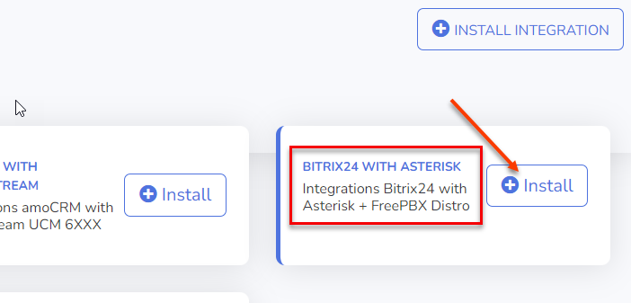
- Заполните все необходимые пункты для интеграции

- Bitrix24 Domain (1) - Указываем доменное имя вашего Битрикс24 (без https://)
- Asterisk AMI Host (2) - Указываем внешний ip-адрес AMI интерфейса, или его доменное имя
- Asterisk AMI Port (3) - Указываем внешний порт AMI интерфейса
- Asterisk AMI Username (4) - Указываем AMI Username (Смотрите раздел Настройка AMI Asterisk)
- Asterisk AMI Secret (5) - Указываем AMI Secret (Смотрите раздел Настройка AMI Asterisk)
Подключение интеграции на стороне сервиса Callbee через установщик
- Нажмите «Install Integration»

- Выберите Bitrix24 в поле CRM
- Выберите Asterisk в поле Platform

- Заполните все необходимые поля

- Asterisk AMI Host (1) - Указываем внешний ip-адрес AMI интерфейса, или его доменное имя
- Asterisk AMI Port (2) - Указываем внешний порт AMI интерфейса
- Asterisk AMI Username (3) - Указываем AMI Username (Смотрите раздел Настройка AMI Asterisk)
- Asterisk AMI Secret (4) - Указываем AMI Secret (Смотрите раздел Настройка AMI Asterisk)
Настройка интеграции на стороне сервиса Callbee для каждой линии АТС в отдельности (доступно в pro-версии и demo-режиме)
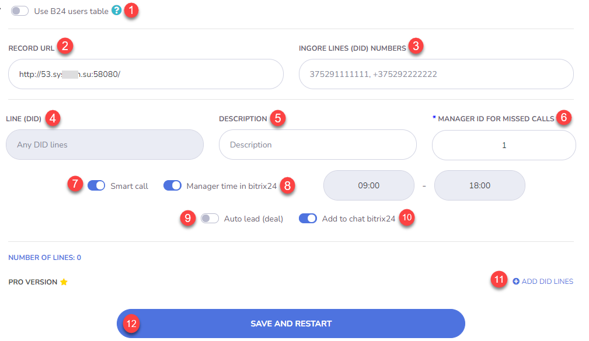
- Use B24 users table (1) - Перенос настройки внутренних номеров интеграции из Битрикс24 в Callbee.
- Record URL (2) - Ссылка для записей разговоров. По данной ссылке Битрикс24 будет сохранять себе запись разговора. Ссылка должна быть всегда доступна.
Важное замечание
Если сервер телефонии АТС находится в одной локальной сети с коробочной версией Битрикс24, то можно указывать локальный IP-адрес АТС, но в таком случае индикатор доступности будет гореть красным цветом (указывает что ссылка некорректна).
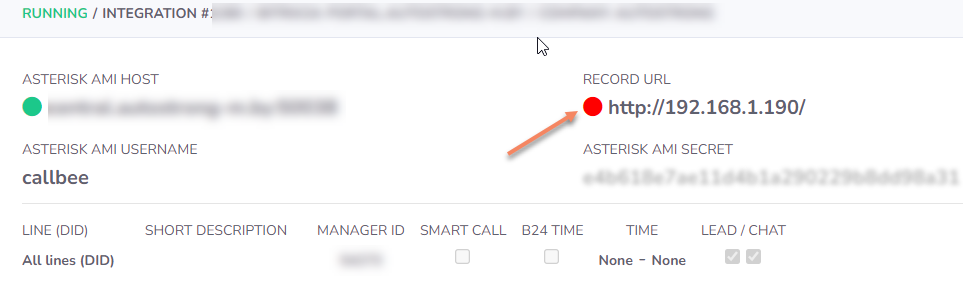
- Ignore Lines (DID) Numbers (3) - Указываем DID номер(а) через запятую и один пробел, на которые интеграция не будет реагировать. Эта функция позволяет не реагировать на номера, не относящиеся к работе в CRM. Например прямые номера бухгалтерии или администрации.
- Line (DID) (4) - Номер подразделения отдела. Номер для входящих звонков, который относится к подразделению/отделу (номер берется из настроек FreePBX поля DID Number )
- Description (5) - Описание линии (DID), будет заполнять поле Линия в карточке Контакта и Сделки в Битрикс24, если оставить поле Description пустым будет проброшен номер линии (DID)
- Manager ID For Missed Calls (6) - ID пользователя в Битрикс24 для пропущенных вызовов (ответственный пользователь за пропущенные вызовы для новых клиентов, которых нет в Битрикс24). Можно устанавливать для каждой линии свое значение. Это поле не должно быть пустым!
Info
Посмотреть какой Manager ID можно открыв профиль сотрудника в Битрикс24 в адресной строке Вашего браузера
 На скриншоте выше значение Manager ID равно 1
На скриншоте выше значение Manager ID равно 1
- Smart Call (7) - Включение умной маршрутизации (перевод звонка на ответственного сотрудника) с указанием времени работы. Вне графика работы умной маршрутизации звонок будет идти по маршруту по умолчанию. Чаще всего применяется для того, чтобы проиграть клиенту сообщение о том, что он дозвонился в нерабочее время.
- Manager time in bitrix24 (8) - Включение графика работы для умной маршрушизации из Битрикс24
- Auto Lead (Deal) (9) - Включение автоматического создания лидов или сделок (+контакт) Битрикс24 (в зависимочсти от режима работы Битрикс24)
- Add to chat bitrix24 (10) - Включение отображения информации о всех звонках в чате Битрикс24
- Add DID Lines (11) - Добавление линии для настройки
- SAVE AND RESTART (12) - Сохранение настроек с одновременнным перезапуском интеграции
Настройка интеграции на стороне сервиса Callbee для каждого внутреннего номера.
Важное замечание
Для настройки внутренних номеров через сервис CallBee нужно включить переключатель «Use B24 users table»
- Заходим в настройки интеграции, нажимаем «Settings»

- Включаем переключатель «Use B24 users table»

- После включения «Use B24 users table» появится пункт меню «Bitrix24 users», переходим в него


- Go to settings (1) - Переход на страницу настроек
- Integration Info (2) - Информация о интеграции
- Show active users (3) - Фильтр для отображения активных пользователей
- Save and restart (4) - Сохранение настроек и перезапуск интеграции
- Search (5) - Поиск записей в таблице настроек
- Active (6) - Включение настроек для пользователя (сотрудника) через сервис CallBee. Акитвация коммерческой лицензии для этого пользователя (актиных пользователей должно быть не больше количества лицензий) Если переключатель стоит в режиме off то интеграция будет игнорировать это пользователя, даже если у него прописан внутренний номер и заполнены все остальные поля.
- Bitrix ID (7) - ID пользователя (сотрудника) в Битрикс24
- Name (8) - Имя пользователя (сотрудника) в Битрикс24
- Internal Number (9) - Внутренний номер пользователя (сотрудника) во FreePBX
- External Number (10) - Личный номер пользователя (сотрудника) что будет совершать звонки по клику из Битрикс24 на мобильном устройстве. При звонке по клику на мобильном устройстве будет осуществляться вызов в обе стороны - пользовтателю (сотруднику) и клиенту Вашей компании. Номер используется для взаимодействия приложения Битрикс24 на мобильном устройстве и осуществления вызовов звонком по клику.
- Smart Call (11) - Включение умной маршрутизации (перевод звонка на ответственного сотрудника) с указанием времени работы. Вне графика работы умной маршрутизации звонок будет идти по маршруту по умолчанию. Чаще всего применяется для того, чтобы проиграть клиенту сообщение о том, что он дозвонился в нерабочее время.
- B24 Time (12) - Включение графика работы для пользователя (сотрудника) из Битрикс24 для умной маршрутизации
- Add to Chat (13) - Включение отображения информации о всех звонках в чате Битрикс24
- Auto Answer (14) - Включение автоответа на SIP-телефоне, (аппаратном или программном (софтфон). При звонке по клику с использованием сервиса CallBee первоначально звонок приходит как входящий на SIP-телефон (аппаратный или программный) и после его приема происходит исходящий вызов клиенту Вашей компании. Включение данной функции позволит SIP-телефону (аппаратному или программному) принимать звонок автоматически, без участия пользователя (сотрудника). В том случае если SIP-телефон (аппаратный или программный) поддерживает данный фуннкционал (например SIP-телефоны Yealink с актуальной прошивкой)
- Multiple Registration (15) - Включение функции Multiple Registration позволяет пользоваться звонком по клику при наличии нескольких SIP-телефонов (аппаратных или программных)
Важное замечание

При включении данной функции автоматически отключается функция автоответа (из предыдущего пункта)
Настройка в Битрикс24.
Важное замечание
Если пункты, описанные ниже у Вас отсутствуют, то следует проверить корректность предыдущих настроек!!!
-
В меню Битрикс24 перейдите на страницу «Телефония»

-
Далее выбрать «Настройка телефонии» (1)

- Настройках телефонии необходимо выбрать в пункте «Номер для исходящего звонка по-умолчанию (2)» -> «Приложение Asterisk и Yeastar Callbee.io»
Далее нажимаем «Сохранить»

Настройка интеграции завершена!